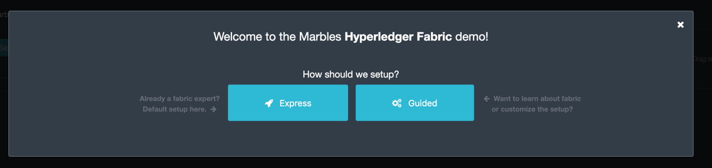

Section 1: Lab Part 2 Overview
In this part of the lab, you will use the Hyperledger Fabric network that you created in the Part 1 of the lab and configure the Marbles User Interface (UI) web application so that it will integrate with the marbles chaincode that you installed in the previous lab.
You will use two browser sessions to simulate acting as a user for each of the two organizations in the network- United Marbles and Marbles Inc.
Then you can explore the Marbles UI to execute chaincode transactions and see some of the Hyperledger Fabric concepts in action.
Section 2: Marbles user interface setup
Step 2.1: Switch to the ~/zmarbles/marblesUI directory:
bcuser@ubuntu16045:~$ cd ~/zmarbles/marblesUI
bcuser@ubuntu16045:~/zmarbles/marblesUI$
Step 2.2: You will need to do an npm install to install the packages needed by the Marbles user interface. First you will verify that the node_modules directory does not exist. This directory will be created when you run an npm install in the next step, so right now it shouldn't exist:
bcuser@ubuntu16045:~/zmarbles/marblesUI$ ls -l node_modules
ls: cannot access 'node_modules': No such file or directory
Step 2.3: Now run the npm install:
bcuser@ubuntu16045:~/zmarbles/marblesUI$ npm install
.
. (output not shown here)
.
Step 2.4: When this command ends, list the node_modules directory again. It is there now:
bcuser@ubuntu16045:~/zmarbles/marblesUI$ ls -l node_modules
.
. (output not shown here)
.
Step 2.5: Change to the config directory:
bcuser@ubuntu16045:~/zmarbles/marblesUI$ cd config
bcuser@ubuntu16045;~/zmarbles/marblesUI/config$
Step 2.6: There are four files in this directory:
bcuser@ubuntu16045:~/zmarbles/marblesUI/config$ ls
connection_profile1.json connection_profile2.json marbles1.json marbles2.json
bcuser@ubuntu16045:~/zmarbles/marblesUI/config$
Step 2.7: There are two files for the first fictitious company, United Marbles, and two files for the second fictitious company, Marbles Inc. Look at the marbles1.json file with the cat command:
bcuser@ubuntu16045:~/zmarbles/marblesUI/config$ cat marbles1.json
{
"cred_filename": "connection_profile1.json",
"use_events": false,
"keep_alive_secs": 120,
"company": "United Marbles",
"usernames": [
"amy",
"alice",
"ava"
],
"port": 3001,
"last_startup_hash": ""
}
Step 2.8: Notice that this file points to one of the other existing files, connection_profile1.json, as the value of the cred_filename name/value pair. You will look at that in a moment. Take a note of the usernames array- amy, alice, and ava. If you are comfortable with the vi editor you could change those names to your favorite names if you would like. You can also use the sed command to change the name inline without entering vi. Here is an example of a command to change the name alice to vincent. This step is optional- you do not have to do this is you prefer the name alice to vincent:
bcuser@ubuntu16045:~/zmarbles/marblesUI/config$ sed -i "s/alice/vincent/" marbles1.json # optional
bcuser@ubuntu16045:~/zmarbles/marblesUI/config$
Step 2.9: Here is the file after I changed alice to vincent with the previous sed command:
bcuser@ubuntu16045:~/zmarbles/marblesUI/config$ cat marbles1.json
{
"cred_filename": "connection_profile1.json",
"use_events": false,
"keep_alive_secs": 120,
"company": "United Marbles",
"usernames": [
"amy",
"vincent",
"ava"
],
"port": 3001,
"last_startup_hash": ""
}
NOTE: Your file will look different if you choose to skip the optional Step 2.9 or if you made changes other than the example change I showed. The purpose of this step is to ensure that your file changed the way you intended it to (if it changed at all).
The other key thing to note is the port number. It is 3001 here. In the marbles2.json file for Marbles Inc, port 3002 will be specified. This is how, later in this lab, you will pretend to be a user of one company or the other- by using port 3001 in the URL to pretend to be a "United Marbles" user and by using port 3002 in the URL to pretend to be a "Marbles Inc" user.
Step 2.10: It is time to look at the main configuration file the Marbles app uses. It is the file specified as the cred_filename value in the marbles1.json file. This name cred_filename for the JSON name/value pair and the filename, blockchain_creds1.json, indicate that security credentials are specified in this file, and they are, but actually information about the Hyperledger Fabric network itself is specified in this file as well. This file is too large to fit in one screen, so I will teach you one more Linux command, named more. (Pun intended). Type this:
bcuser@ubuntu16045:~/zmarbles/marblesUI/config$ more connection_profile1.json
This command will print as much of the file as it can on your screen but will pause until you hit enter before displaying the rest of the file's contents. Here are the complete contents of this file:
{
"name": "Docker Compose Network",
"x-networkId": "not-important",
"x-type": "hlfv1",
"description": "Connection Profile for an IBM Blockchain Network",
"version": "1.0.0",
"client": {
"organization": "Org0MSP"
},
"channels": {
"mychannel": {
"orderers": [
"fabric-orderer"
],
"peers": {
"fabric-peer-org1" : {
"x-chaincode": {}
}
},
"chaincodes": [
"marbles:v4"
],
"x-blockDelay": 1000
}
},
"organizations": {
"Org0MSP": {
"mspid": "Org0MSP",
"peers": [
"fabric-peer-org1"
],
"certificateAuthorities": [
"fabric-ca-org1"
]
}
},
"orderers": {
"fabric-orderer": {
"url": "grpcs://localhost:7050",
"grpcOptions": {
"ssl-target-name-override": "orderer.blockchain.com",
"grpc.http2.keepalive_time": 300,
"grpc.keepalive_time_ms": 300000,
"grpc.http2.keepalive_timeout": 35,
"grpc.keepalive_timeout_ms": 3500
},
"tlsCACerts": {
"path": "../../crypto-config/ordererOrganizations/blockchain.com/orderers/orderer.blockchain.com/tls/ca.crt"
}
}
},
"peers": {
"fabric-peer-org1": {
"url": "grpcs://localhost:7051",
"eventUrl": "grpcs://localhost:7053",
"grpcOptions": {
"ssl-target-name-override": "peer0.unitedmarbles.com",
"grpc.http2.keepalive_time": 300,
"grpc.keepalive_time_ms": 300000,
"grpc.http2.keepalive_timeout": 35,
"grpc.keepalive_timeout_ms": 3500
},
"tlsCACerts": {
"path": "../../crypto-config/peerOrganizations/unitedmarbles.com/peers/peer0.unitedmarbles.com/tls/ca.crt"
}
}
},
"certificateAuthorities": {
"fabric-ca-org1": {
"url": "https://localhost:7054",
"httpOptions": {
"ssl-target-name-override": "ca.unitedmarbles.com",
"verify": true
},
"tlsCACerts": {
"path": "../../crypto-config/peerOrganizations/unitedmarbles.com/ca/ca.unitedmarbles.com-cert.pem"
},
"registrar": [
{
"enrollId": "admin",
"enrollSecret": "adminpw"
}
],
"caName": "ca-org0"
}
}
}
This is a standard Hyperledger Fabric connection profile. This lab does not use Hyperledger Composer, but I think the Hyperledger Composer team did a nice job describing Hyperledger Fabric connection profiles, as they use them too. See https://hyperledger.github.io/composer/latest/reference/connectionprofile for their description. They also reference a link in the Hyperledger Fabric Node.js SDK documentation at https://fabric-sdk-node.github.io/tutorial-network-config.html which is a little more advanced, and it describes the profile in YAML form versus the JSON form that this Marbles demo app uses.
IMPORTANT: if you used a channel name other than the default of mychannel, you must change this value from mychannel to the value you used. Either use the vi editor if you are comfortable with that, or, you could use sed. For example, here is a sed command, to change the channel name from mychannel to tim, along with "before" and "after" grep commands to show the changes (These commands are examples and only needed if you did not use the default channel name of mychannel):
bcuser@ubuntu16045:~/zmarbles/marblesUI/config$ grep mychannel connection_profile[12].json
blockchain_creds1.json: "channel_id": "mychannel",
blockchain_creds2.json: "channel_id": "mychannel",
bcuser@ubuntu16045:~/zmarbles/marblesUI/config$ sed -i "s/mychannel/tim/" connection_profile[12].json
bcuser@ubuntu16045:~/zmarbles/marblesUI/config$ grep -1 channels connection_profile[12].json
connection_profile1.json- },
connection_profile1.json: "channels": {
connection_profile1.json- "tim": {
--
connection_profile2.json- },
connection_profile2.json: "channels": {
connection_profile2.json- "tim": {
Step 2.11: The considerations for marbles2.json and connection_profile2.json are the same as for marbles1.json and connection_profile1.json except that they apply to "Marbles Inc." instead of "United Marbles". If you would like to compare the differences between connection_profile1.json and connection_profile2.json, try the diff command and observe its output. This command lists sections of the two files that it finds different. The lines from the first file, blockchain_creds1.json, start with '<' (added by the diff command output, not in the actual file), and the lines from the second file, blockchain_creds2.json, start with '>':
bcuser@ubuntu16045:~/zmarbles/marblesUI/config$ diff connection_profile1.json connection_profile2.json
8c8
< "organization": "Org0MSP"
---
> "organization": "Org1MSP"
16c16
< "fabric-peer-org1" : {
---
> "fabric-peer-org2" : {
27,28c27,28
< "Org0MSP": {
< "mspid": "Org0MSP",
---
> "Org1MSP": {
> "mspid": "Org1MSP",
30c30
< "fabric-peer-org1"
---
> "fabric-peer-org2"
33c33
< "fabric-ca-org1"
---
> "fabric-ca-org2"
54,56c54,56
< "fabric-peer-org1": {
< "url": "grpcs://localhost:7051",
< "eventUrl": "grpcs://localhost:7053",
---
> "fabric-peer-org2": {
> "url": "grpcs://localhost:9051",
> "eventUrl": "grpcs://localhost:9053",
58c58
< "ssl-target-name-override": "peer0.unitedmarbles.com",
---
> "ssl-target-name-override": "peer0.marblesinc.com",
65c65
< "path": "../../crypto-config/peerOrganizations/unitedmarbles.com/peers/peer0.unitedmarbles.com/tls/ca.crt"
---
> "path": "../../crypto-config/peerOrganizations/marblesinc.com/peers/peer0.marblesinc.com/tls/ca.crt"
70,71c70,71
< "fabric-ca-org1": {
< "url": "https://localhost:7054",
---
> "fabric-ca-org2": {
> "url": "https://localhost:8054",
73c73
< "ssl-target-name-override": "ca.unitedmarbles.com",
---
> "ssl-target-name-override": "ca.marblesinc.com",
77c77
< "path": "../../crypto-config/peerOrganizations/unitedmarbles.com/ca/ca.unitedmarbles.com-cert.pem"
---
> "path": "../../crypto-config/peerOrganizations/marblesinc.com/ca/ca.marblesinc.com-cert.pem"
81,82c81,82
< "enrollId": "admin",
< "enrollSecret": "adminpw"
---
> "enrollId": "admin2",
> "enrollSecret": "adminpw2"
85c85
< "caName": "ca-org0"
---
> "caName": "ca-org1"
Section 3: Start the Marbles user interface
In this section, you will use the Marbles user interface. You will start two browser sessions- one will be as a "United Marbles" user, and the other as a "Marbles Inc" user. Here in this lab, you are serving both companies' applications from the same server, so you will differentiate between the two companies by the port number. You will connect to port 3001 when acting as a United Marbles user, and you will connect to port 3002 when acting as a Marbles Inc user. In the real world, each of the two companies would probably either serve the user interface from their own server, or perhaps both companies would log in to a server provided by a service provider- think "Blockchain-as-a-service". The chosen topology is use-case dependent and beyond the scope of this lab.
Step 3.1: You are now ready to start the server for UnitedMarbles. Back up to the ~/zmarbles/marblesUI directory:
bcuser@ubuntu16045:~/zmarbles/marblesUI/config$ cd ..
bcuser@ubuntu16045:~/zmarbles/marblesUI$
Step 3.2: You will now use gulp to start up the server, with this command:
bcuser@ubuntu16045:~/zmarbles/marblesUI$ gulp marbles1
[12:58:04] Using gulpfile ~/zmarbles/marblesUI/gulpfile.js
[12:58:04] Starting 'env_tls'...
[12:58:04] Finished 'env_tls' after 52 μs
[12:58:04] Starting 'build-sass'...
[12:58:04] Finished 'build-sass' after 6.47 ms
[12:58:04] Starting 'watch-sass'...
[12:58:04] Finished 'watch-sass' after 6.58 ms
[12:58:04] Starting 'watch-server'...
[12:58:04] Finished 'watch-server' after 1.96 ms
[12:58:04] Starting 'server'...
info: Checking connection profile is done
info: Loaded config file /home/bcuser/zmarbles/marblesUI/config/marbles1.json
info: Loaded connection profile file /home/bcuser/zmarbles/marblesUI/config/connection_profile1.json
Connection Profile Lib Functions:()
getNetworkName()
getNetworkCredFileName()
buildTlsOpts()
getFirstChannelId()
getChannelId()
loadPem()
getMarblesField()
getChaincodeId()
getChaincodeVersion()
getFirstCaName()
getCA()
getCasUrl()
getAllCaUrls()
getCaName()
getCaTlsCertOpts()
getEnrollObj()
getFirstPeerName()
getPeer()
getPeersUrl()
getAllPeerUrls()
getPeerEventUrl()
getPeerTlsCertOpts()
getMarbleUsernamesConfig()
getCompanyNameFromFile()
getMarblesPort()
getEventsSetting()
getKeepAliveMs()
getFirstOrdererName()
getOrderer()
getOrderersUrl()
getOrdererTlsCertOpts()
getBlockDelay()
getKvsPath()
getFirstOrg()
getClientsOrgName()
getClientOrg()
getMarbleUsernames()
getOrgsMSPid()
getAdminPrivateKeyPEM()
getAdminSignedCertPEM()
----------------------------------- Server Up - localhost:3001 -----------------------------------
Welcome aboard: United Marbles
Channel: mychannel
Org: Org0MSP
CA: fabric-ca-org1
Orderer: fabric-orderer
Peer: fabric-peer-org1
Chaincode ID: marbles
Chaincode Version: v4
------------------------------------------ Websocket Up ------------------------------------------
debug: loading pem from a path: /home/bcuser/zmarbles/crypto-config/peerOrganizations/unitedmarbles.com /ca/ca.unitedmarbles.com-cert.pem
debug: loading pem from a path: /home/bcuser/zmarbles/crypto-config/ordererOrganizations/blockchain.com/orderers/orderer.blockchain.com/tls/ca.crt
debug: loading pem from a path: /home/bcuser/zmarbles/crypto-config/peerOrganizations/unitedmarbles.com/peers/peer0.unitedmarbles.com/tls/ca.crt
info: [fcw] Going to enroll peer_urls=[grpcs://localhost:7051], channel_id=mychannel, uuid=marblesDockerComposeNetworkmychannelOrg0MSPfabricpeerorg1, ca_url=https://localhost:7054, orderer_url=grpcs://localhost:7050, enroll_id=admin, enroll_secret=adminpw, msp_id=Org0MSP, kvs_path=/home/bcuser/.hfc-key-store/marblesDockerComposeNetworkmychannelOrg0MSPfabricpeerorg1
debug: enroll id: "admin", secret: "adminpw"
debug: msp_id: Org0MSP ca_name: ca-org0
info: [fcw] Successfully enrolled user 'admin'
debug: added peer grpcs://localhost:7051
debug: [fcw] Successfully got enrollment marblesDockerComposeNetworkmychannelOrg0MSPfabricpeerorg1
info: Success enrolling admin
debug: loading pem from a path: /home/bcuser/zmarbles/crypto-config/peerOrganizations/unitedmarbles.com/ca/ca.unitedmarbles.com-cert.pem
debug: loading pem from a path: /home/bcuser/zmarbles/crypto-config/ordererOrganizations/blockchain.com/orderers/orderer.blockchain.com/tls/ca.crt
debug: loading pem from a path: /home/bcuser/zmarbles/crypto-config/peerOrganizations/unitedmarbles.com/peers/peer0.unitedmarbles.com/tls/ca.crt
debug: Checking if chaincode is already instantiated or not 1
info: Checking for chaincode...
debug: [fcw] Querying Chaincode: read()
debug: [fcw] Sending query req: chaincodeId=marbles, fcn=read, args=[selftest], txId=null
debug: [fcw] Peer Query Response - len: 1 type: number
debug: [fcw] Successful query transaction.
----------------------------- Chaincode found on channel "mychannel" -----------------------------
info: Checking chaincode and ui compatibility...
debug: [fcw] Querying Chaincode: read()
debug: [fcw] Sending query req: chaincodeId=marbles, fcn=read, args=[marbles_ui], txId=null
warn: [fcw] warning - query resp is not json, might be okay: string 4.0.1
debug: [fcw] Successful query transaction.
info: Chaincode version is good
info: Checking ledger for marble owners listed in the config file
info: Fetching EVERYTHING...
debug: [fcw] Querying Chaincode: read_everything()
debug: [fcw] Sending query req: chaincodeId=marbles, fcn=read_everything, args=[], txId=null
debug: [fcw] Peer Query Response - len: 529 type: object
debug: [fcw] Successful query transaction.
debug: This company has registered marble owners
debug: Looking for marble owner: amy
debug: Did not find marble username: amy
info: We need to make marble owners
- - - - - - - - - - - - - - - - - - - - - - - - - - - - - - - - - -
info: Detected that we have NOT launched successfully yet
debug: Open your browser to http://localhost:3001 and login as "admin" to initiate startup
- - - - - - - - - - - - - - - - - - - - - - - - - - - - - - - - - -
The first line of the output just listed reads:
[12:58:04] Using gulpfile ~/zmarbles/marblesUI/gulpfile.js
I am not going to go into detail on the gulp tool here, but if you are curious, if you look into the gulpfile.js file (you would have to use another PuTTY or SSH session as this one is now tied up) you would find that a marbles1 task (marbles1 being your argument to the gulp command) is defined:
gulp.task('marbles1', ['env_tls', 'watch-sass', 'watch-server', 'server']);
The marbles1 task specifies four more tasks to run, the first of which is env_tls. This task is adding a value to a map named env. This value points to the marbles1.json file:
gulp.task('env_tls', function () {
env['creds_filename'] = 'marbles1.json';
});
The last of the tasks, server, when it is started, is receiving this map named env as part of its invocation:
gulp.task('server', function(a, b) {
if(node) node.kill();
node = spawn('node', ['app.js'], {env: env, stdio: 'inherit'}); //command, file, options
});
The syntax is a bit arcane, and this is not a course in JavaScript, but there is a line in the main file for the server, app.js, that reads this creds_filename value:
var cp = require(__dirname + '/utils/connection_profile_lib/index.js')(process.env.creds_filename, logger);
Then within utils/connection_profile_lib/index.js is where all the magic, a.k.a. code, happens to make use of the values specified in that file.
You did not need to know all this to run the application, but you might need to know where to start looking when your boss asks you to tailor the marbles application because she wants a return on the time and money you spent taking this lab- assuming you don't get off the hook when you tell her that nowhere was JavaScript mentioned on the agenda.
Step 3.3: Open up a web browser window or tab and point to http://<your_IP_goes_here>:3001. Substitute your team's assigned IP address instead of <your_IP_goes_here>. You should see a window pop up that looks like this:

Step 3.4: You are given a choice between Express and Guided for setting up the demo. Don't short-change yourself- pick Guided, you'll learn more. After you click Guided, you will see this:

Read the text in the window to see what's going on.
Step 3.5: If you do not see Step 1 Complete, ask an instructor for help. Otherwise, click Next Step and you should see this:

Click the '+' sign if you wish to see the settings used to contact the Fabric Certificate Authority.
Step 3.6: If you do not see Step 2 Complete, ask an instructor for help. Otherwise, click Next Step and you should see this:

Click the '+' sign to see information about your environment and your marbles chaincode.
Step 3.7: If you do not see Step 3 Complete, ask an instructor for help. Otherwise, click Next Step and you should see this:

Step 3.8: Unlike the first three steps, which did not require further input from you to complete, this step will not proceed until you click the Create button. Before you do that you have an opportunity to review and change the names that you use for new marbles owners in addition to the owner named 'Barry' that should already exist (though not evident from this screen) if you created it in the first part of this lab.
Click the Create button when you are ready and after several seconds you should see Step 4 Complete on the screen:

Step 3.9: If you do not see Step 4 Complete, ask an instructor for help. Otherwise, click Next Step and you should see this:

This should just give you a smiley face and a message saying that setup is complete.
Step 3.10: Click Enter and you should be returned to a screen that looks similar to this (your names may differ):

Step 3.11: What about John's marble for Marbles Inc.? You only started up the server for United Marbles, so why does Marbles Inc show up and why is John so lonely? When you did the previous lab, the first two commands I had you do were an init_owner for John, tying him to Marbles Inc, and then an init_marble, giving him a marble. Remember, the "blockchain" is shared among all participants of the channel, so United Marbles and Marbles Inc both see the same chain- they see each other's marbles.
But the user names specified in config/marbles2.json are not created until you start the server for marbles2 and log in the first time. List the contents of marbles2.json file (switch to a free PuTTY session or start a new one), e.g.:
bcuser@ubuntu16045:~$ cd ~/zmarbles/marblesUI
bcuser@ubuntu16045:~/zmarbles/marblesUI$ cat config/marbles2.json
{
"cred_filename": "connection_profile2.json",
"use_events": false,
"keep_alive_secs": 120,
"company": "Marbles Inc",
"usernames": [
"cliff",
"cody",
"chuck"
],
"port": 3002,
"last_startup_hash": ""
}
Step 3.12: Start the second server, the one for Marbles Inc:
bcuser@ubuntu16045:~/zmarbles/marblesUI$ gulp marbles2
[13:12:59] Using gulpfile ~/zmarbles/marblesUI/gulpfile.js
[13:12:59] Starting 'env_tls2'...
[13:12:59] Finished 'env_tls2' after 54 μs
[13:12:59] Starting 'build-sass'...
[13:12:59] Finished 'build-sass' after 6.6 ms
[13:12:59] Starting 'watch-sass'...
[13:12:59] Finished 'watch-sass' after 7.13 ms
[13:12:59] Starting 'watch-server'...
[13:12:59] Finished 'watch-server' after 1.94 ms
[13:12:59] Starting 'server'...
info: Checking connection profile is done
info: Loaded config file /home/bcuser/zmarbles/marblesUI/config/marbles2.json
info: Loaded connection profile file /home/bcuser/zmarbles/marblesUI/config/connection_profile2.json
Connection Profile Lib Functions:()
getNetworkName()
getNetworkCredFileName()
buildTlsOpts()
getFirstChannelId()
getChannelId()
loadPem()
getMarblesField()
getChaincodeId()
getChaincodeVersion()
getFirstCaName()
getCA()
getCasUrl()
getAllCaUrls()
getCaName()
getCaTlsCertOpts()
getEnrollObj()
getFirstPeerName()
getPeer()
getPeersUrl()
getAllPeerUrls()
getPeerEventUrl()
getPeerTlsCertOpts()
getMarbleUsernamesConfig()
getCompanyNameFromFile()
getMarblesPort()
getEventsSetting()
getKeepAliveMs()
getFirstOrdererName()
getOrderer()
getOrderersUrl()
getOrdererTlsCertOpts()
getBlockDelay()
getKvsPath()
getFirstOrg()
getClientsOrgName()
getClientOrg()
getMarbleUsernames()
getOrgsMSPid()
getAdminPrivateKeyPEM()
getAdminSignedCertPEM()
----------------------------------- Server Up - localhost:3002 -----------------------------------
Welcome aboard: Marbles Inc
Channel: mychannel
Org: Org1MSP
CA: fabric-ca-org2
Orderer: fabric-orderer
Peer: fabric-peer-org2
Chaincode ID: marbles
Chaincode Version: v4
------------------------------------------ Websocket Up ------------------------------------------
debug: loading pem from a path: /home/bcuser/zmarbles/crypto-config/peerOrganizations/marblesinc.com/ca/ca.marblesinc.com-cert.pem
debug: loading pem from a path: /home/bcuser/zmarbles/crypto-config/ordererOrganizations/blockchain.com/orderers/orderer.blockchain.com/tls/ca.crt
debug: loading pem from a path: /home/bcuser/zmarbles/crypto-config/peerOrganizations/marblesinc.com/peers/peer0.marblesinc.com/tls/ca.crt
info: [fcw] Going to enroll peer_urls=[grpcs://localhost:9051], channel_id=mychannel, uuid=marblesDockerComposeNetworkmychannelOrg1MSPfabricpeerorg2, ca_url=https://localhost:8054, orderer_url=grpcs://localhost:7050, enroll_id=admin2, enroll_secret=adminpw2, msp_id=Org1MSP, kvs_path=/home/bcuser/.hfc-key-store/marblesDockerComposeNetworkmychannelOrg1MSPfabricpeerorg2
debug: enroll id: "admin2", secret: "adminpw2"
debug: msp_id: Org1MSP ca_name: ca-org1
info: [fcw] Successfully enrolled user 'admin2'
debug: added peer grpcs://localhost:9051
debug: [fcw] Successfully got enrollment marblesDockerComposeNetworkmychannelOrg1MSPfabricpeerorg2
info: Success enrolling admin
debug: loading pem from a path: /home/bcuser/zmarbles/crypto-config/peerOrganizations/marblesinc.com/ca/ca.marblesinc.com-cert.pem
debug: loading pem from a path: /home/bcuser/zmarbles/crypto-config/ordererOrganizations/blockchain.com/orderers/orderer.blockchain.com/tls/ca.crt
debug: loading pem from a path: /home/bcuser/zmarbles/crypto-config/peerOrganizations/marblesinc.com/peers/peer0.marblesinc.com/tls/ca.crt
debug: Checking if chaincode is already instantiated or not 1
info: Checking for chaincode...
debug: [fcw] Querying Chaincode: read()
debug: [fcw] Sending query req: chaincodeId=marbles, fcn=read, args=[selftest], txId=null
debug: [fcw] Peer Query Response - len: 1 type: number
debug: [fcw] Successful query transaction.
----------------------------- Chaincode found on channel "mychannel" -----------------------------
info: Checking chaincode and ui compatibility...
debug: [fcw] Querying Chaincode: read()
debug: [fcw] Sending query req: chaincodeId=marbles, fcn=read, args=[marbles_ui], txId=null
warn: [fcw] warning - query resp is not json, might be okay: string 4.0.1
debug: [fcw] Successful query transaction.
info: Chaincode version is good
info: Checking ledger for marble owners listed in the config file
info: Fetching EVERYTHING...
debug: [fcw] Querying Chaincode: read_everything()
debug: [fcw] Sending query req: chaincodeId=marbles, fcn=read_everything, args=[], txId=null
debug: [fcw] Peer Query Response - len: 2282 type: object
debug: [fcw] Successful query transaction.
debug: This company has registered marble owners
debug: Looking for marble owner: cliff
debug: Did not find marble username: cliff
info: We need to make marble owners
- - - - - - - - - - - - - - - - - - - - - - - - - - - - - - - - - -
info: Detected that we have NOT launched successfully yet
debug: Open your browser to http://localhost:3002 and login as "admin" to initiate startup
- - - - - - - - - - - - - - - - - - - - - - - - - - - - - - - - - -
If you peek at your browser session from United Marbles, (port 3001), you will not notice any changes yet.
Step 3.13: Open a browser tab or window and navigate to http://<your_IP_here>:3002. You will again be given a choice of Express or Guided and feel free to choose whichever path suits your fancy. If you choose Express, everything should hopefully sail through until you see a screen with all Marbles Inc. owners and marbles, as well as all United Marbles owners and marbles:

Step 3.14: If you go back to your screen for United Marbles (port 3001) you should observe that it has been updated to show the owners and marbles for Marbles Inc. in addition to United Marbles' own owners and marbles:

Remember, you are looking at the United Marbles session but you see all the new users and marbles created by the Marbles Inc administrator.
Step 3.15: Play with your marbles!! Here are some things you can do. When you do things as one user, e.g. as the United Marbles admin, go to the other user's screen to see that the changes one organization makes are visible to the other organization:
- On two different browser sessions, you should be logged in as the administrator for each of the two fictitious companies. When you are the United Marbles administrator, you can create marbles for you or anybody in United Marbles. You can delete marbles for you or anybody in United Marbles. You can take marbles from anybody in United Marbles and give them to anybody in the network, even to Marbles Inc people. (And vice versa when you are a Marbles Inc administrator).
- Try clicking on the little magnifying glass to the left of the browser window and follow the directions
- Right click on a marble (Hint: this is the same as using the magnifying glass)
- Click on the Settings button and Enable story mode. Try an action that is allowed, and try an action that shouldn't be allowed, such as trying to steal a marble from the other company. Disable story mode when it gets too tedious, which shouldn't take long.
Step 3.16: If you want that extra rush, try these optional advanced assignments:
- Break out the previous lab's material and enter the cli container and issue some commands to create, update or delete marbles. See if the Marbles UI reflects your changes
- Look at some of the marbles chaincode container logs while you work with the Marbles UI - Hint: docker logs [-f] container_name will show a container's log. Try it without the optional -f argument first and then try it with it. -f ties up your terminal session but then shows new log messages as they are created. Press Ctrl-c to get out of it.
- Look at the peer or orderer logs while you work with the Marbles UI
* Click the Start Up Help button in the upper left in the Marbles UI and then number 4 in the window that pops up. Edit the list of names at the bottom and click Create. Do your new users show up in both companies' sessions? What happens if you add a name that exists already?
End of lab!